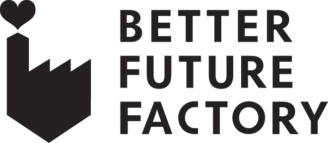
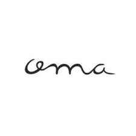
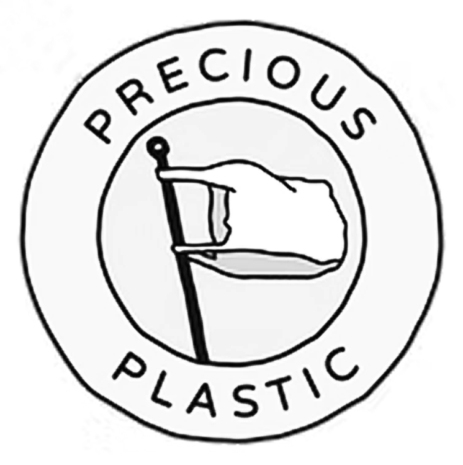
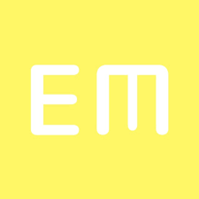

Productverkoop
Kleine gebruiksproducten van gerecycled PP en HDPE, ieder met een eigen gemarmerd kleurpatroon.
Naar de shop →De PlasticPerserij maakt producten en kleine series van gerecycled plastic in Rotterdam Noord. Van eigen producten tot maatwerk voor bedrijven, met aandacht voor materiaal, maakbaarheid en hergebruik.


De PlasticPerserij is opgericht om Rotterdams plastic afval een betere bestemming te geven dan de straat of de afvalbak. We maken er nieuwe, bruikbare producten van — lokaal, in kleine series en met aandacht voor wat het materiaal al in zich heeft.
Lees ons verhaal →Kleine gebruiksproducten van gerecycled PP en HDPE, ieder met een eigen gemarmerd kleurpatroon.
Naar de shop →
Van malontwerp tot spuitgieten: voor bedrijven en ontwerpers die een eigen onderdeel of product willen laten maken.
Bekijk productie →
We werken aan een mobiele opstelling voor demonstraties, workshops en productie bij scholen, bedrijven en evenementen.
Ontdek op locatie →



Vraag over een product, een eigen serie, productie op locatie of iets anders? Stuur een bericht.